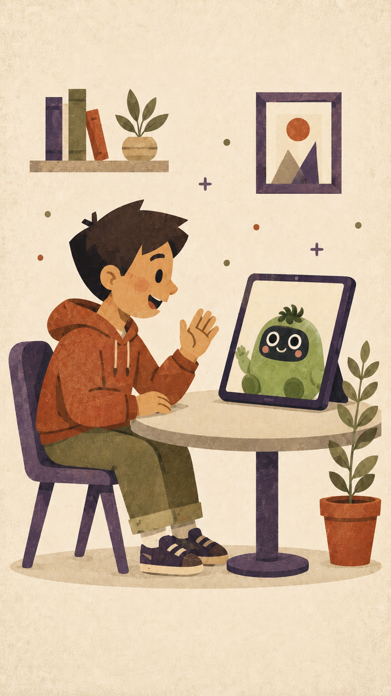

01 The role reversal
Your child is the expert.
Tomo is the
student.
Most learning apps quiz children. Miotomo flips it. Tomo doesn't know what a volcano is, or who Julius Caesar was, or why ice floats. He needs your child to tell him. This makes children take charge and they stop performing for a test and start thinking critically.